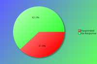
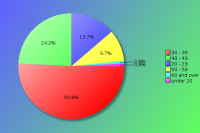
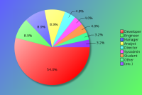
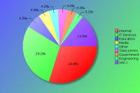
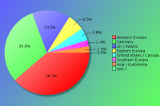

YAPC::Europe 2012 - Survey Results
The following survey results are a simple presentation of the raw data.
No attempt has been made to analyse the data and compare with previous
years. See forthcoming PDFs for more in depth analysis.
Click on pie charts to view larger image version.
Demographics (required)
These questions will help us understand who our attendees are.
Attendees:

| Count | Description |
|---|
| 124 | Responded |
| 203 | No Response |
| 327 | Total |
| 37 | Response Percentage |
Age Band:

| Count | Description |
|---|
| 1 | under 20 |
| 17 | 20 - 29 |
| 63 | 30 - 39 |
| 30 | 40 - 49 |
| 12 | 50 - 59 |
| 1 | 60 and over |
Job Type:

| Count | Description |
|---|
| 6 | CEO/Company Director/Senior Manager |
| 0 | Non-Technical Manager |
| 11 | Technical Manager |
| 11 | Technical Architect/Analyst |
| 69 | Developer |
| 11 | Engineer |
| 5 | SysAdmin |
| 5 | Student |
| 2 | Lecturer/Teacher/Trainer |
| 0 | Human Resources |
| 1 | Researcher |
| 1 | Unemployed |
| 4 | Other |
If your position covers many roles, please base this on your most senior responsibility. Also base this on the role you perform, rather than your job title. For example, a 'QA Developer' would be a 'Developer' role, and 'Information Manager' would a Manager role (Technical or Non-Technical depending upon your responsibilites)
If 'Other' please enter your professional job role or title:
- Consultant
- IT tech support (level 2)
- Technology Consultant
Industry:

| Count | Description |
|---|
| 1 | Automotive |
| 8 | Education |
| 4 | Engineering |
| 4 | Finance |
| 5 | Government |
| 36 | IT Services |
| 37 | Internet/Web |
| 0 | Legal |
| 0 | Logistics |
| 6 | Media/Entertainment |
| 0 | Medical/Healthcare |
| 1 | Property |
| 3 | Research |
| 3 | Retail |
| 5 | Telecommunications |
| 4 | Travel |
| 2 | Unemployed |
| 5 | Other |
If you or your company undertake work within mulitple industry sectors, please select the primary one you are currently working within.
If 'Other' please enter your industry sector:
- all sectors
- Biotech
- Consultant
- Consulting
- Library systems
Region:

| Count | Description |
|---|
| 38 | Germany |
| 18 | UK / Ireland |
| 48 | Western Europa |
| 8 | Eastern Europa |
| 3 | Southern Europa |
| 6 | United States / Canada |
| 3 | Asia / Australaisa |
| 0 | South America |
| 0 | Africa |
Please note this is the region you were a resident in, prior to attending the conference.
The Perl Community, YAPCs & Workshops
These questions are designed to help us understand our attendees level of involvement in the Perl community.
How do you rate your Perl knowledge?
| Count | Description |
|---|
| 8 | Beginner |
| 45 | Intermediate |
| 71 | Advanced |
How many previous YAPCs have you attended?
| Count | Description |
|---|
| 43 | This was my first YAPC |
| Attended YAPCs | 1 | 2 | 3 | 4 | 5 | 6 | 7 | 8 | 9 | 10 | 11 | 12 | total |
|---|
| YAPC::Europe | 15 | 13 | 8 | 10 | 9 | 2 | 3 | 4 | 1 | 1 | 5 | 2 | 313 |
| YAPC::NA | 5 | 2 | - | 1 | 1 | - | 1 | - | 2 | - | - | - | 43 |
| YAPC::Asia | 2 | - | - | - | 1 | 2 | - | - | - | - | - | - | 19 |
| YAPC::Australia / OSDC::Australia | 3 | - | - | - | - | - | - | - | - | - | - | - | 3 |
| YAPC::Israel / OSDC::Israel | 1 | - | - | - | - | - | - | - | - | - | - | - | 1 |
| YAPC::Russia | 2 | 1 | 2 | - | - | - | - | - | - | - | - | - | 10 |
How many Perl Workshops have you attended?
| Count | Description |
|---|
| 39 | Never attended one |
| Attended Workshops | 1 | 2 | 3 | 4 | 5 | 6 | 7 | 8 | 9 | 10 | total |
|---|
| Austrian Perl Workshop | 2 | - | - | 2 | 1 | - | - | - | - | - | 15 |
| Belgian Perl Workshop | 4 | 3 | - | 1 | - | - | - | - | - | - | 14 |
| French Perl Workshop | 2 | 1 | - | 1 | 2 | - | - | 1 | 1 | - | 35 |
| German Perl Workshop | 11 | - | 3 | 2 | 2 | 3 | 2 | 1 | - | 2 | 98 |
| Italian Perl Workshop | 6 | - | 1 | - | - | 1 | - | - | - | - | 15 |
| London Perl Workshop | 13 | 3 | 3 | 3 | 4 | 2 | - | - | - | - | 72 |
| Netherlands Perl Workshop | 2 | - | 2 | 1 | 2 | 2 | - | 1 | - | - | 42 |
| Nordic Perl Workshop | 7 | 2 | 2 | 2 | - | - | 2 | - | - | - | 39 |
| Portuguese Perl Workshop | 1 | 2 | 2 | - | - | - | - | - | - | - | 11 |
| Ukrainian Perl Workshop | - | 1 | - | - | - | - | - | - | - | - | 2 |
| any American Perl Workshops | 4 | 2 | - | 1 | - | - | - | - | - | - | 12 |
| any Russian Perl Workshops | 1 | 2 | 1 | - | - | - | - | - | - | - | 8 |
| Other Perl Workshops | 2 | 2 | - | - | 1 | - | - | - | - | - | 11 |
Do you plan to attend a future YAPC/Workshop?
| Count | Description |
|---|
| 103 | Yes |
| 17 | Maybe |
| 2 | Don't Know |
| 1 | No |
If no, could you tell us why?
Particularly if this is your first YAPC, we would like to understand why you would not be able or interested in attending another event like it.
- Distance
- No longer interested in learning Perl for anything more than occasional scripting
- got the impression that it lags behind other languages/platforms in support for building complex high performance / throughput applications.
- Time constraints.
Maybe also financal issues if $company isn't paying
Are you a member of a local Perl Mongers user group?
| Count | Description |
|---|
| 79 | Yes |
| 45 | No |
If not, do you plan to find one or start one?
| Count | Description |
|---|
| 8 | Yes |
| 14 | Maybe |
| 12 | Don't Know |
| 11 | No |
What other areas of the Perl Community do you contribute to?
| Count | Description |
|---|
| 67 | I'm a CPAN Author |
| 16 | I'm a CPAN Tester |
| 28 | I'm a Perl project developer (eg Rakudo, Catalyst, TAP, Padre, etc) |
| 40 | I have a technical blog (e.g. on blogs.perl or a personal blog) |
| 48 | I use or contribute to PerlMonks, Stackoverflow or other Perl forums |
| 50 | I use IRC (e.g. #perl, #yapc, or #london.pm) |
| 37 | I contribute to Perl mailing lists (e.g. P5P, Perl QA, etc) |
| 27 | I organise Perl events (e.g. YAPCs, Workshops, technical meetings) |
| 8 | other ... |
If 'Other' please enter your area of contribution
- Board member of YEF
- I talk at work about Perl
- Jointly run blogs.perl.org
- little patches to rakudo/perl6 spec/...
- Local Perl courses
- organise monthly socials
- stick up for Perl when people compare it to COBOL; send people to Modern Perl resources
- trainer
- write docs and wikis
YAPC::Europe 2012
Regarding YAPC::Europe 2012 in Frankfurt am Main, Germany specifically, please answer the following as best you can.
When did you decide to come to this conference?
| Count | Description |
|---|
| 54 | I'm now a regular YAPC::Europe attendee |
| 11 | After YAPC::Europe 2011 in Riga |
| 0 | After joining the Facebook event group |
| 9 | I was nominated to attend by manager/colleague |
| 12 | I was recommended to attend by friend/colleague |
| 2 | After reading an ad in a magazine |
| 13 | After seeing a link or advert on a Perl specific site |
| 2 | After seeing a link or advert on a non-Perl site |
| 6 | After reading an email sent to a mailing list I was in |
| 2 | After seeing other promotions online/in the press |
| 8 | other ... |
If 'Other', what else helped you decide?
- announcement at German Perl Workshop
- blogs.perl.org
- can't recall
- I'd just realized it was about time to visit YAPC finally
- IRC
- not long before the conference and since it is located close to my place
- sponsored to attend the Perl Reunification Conference in Perl, Germany the week before (otherwise couldn't have afforded it)
- wanted to go and combined visit to my brother in Stuttgart
- when $company decided to pay for it
Were you a speaker?
| Count | Description |
|---|
| 66 | No |
| 26 | No, but I have spoken before at similar conferences |
| 26 | Yes, and I have spoken before at similar conferences |
| 4 | Yes, and it was my first time as a speaker |
Note that "similar conferences" includes other YAPCs, as well as Linux, Open Source or large technical events such as workshops.
If you were a speaker, would you have been able to attend if you hadn't been speaking?
| Count | Description |
|---|
| 40 | Yes |
| 3 | No |
If you weren't a speaker, would you consider speaking at a future conference?
| Count | Description |
|---|
| 54 | Yes |
| 5 | No |
| 38 | Ask me later |
What was your motivation for coming?
| Count | Description |
|---|
| 51 | the list of speakers |
| 41 | the quality of the talks scheduled |
| 22 | to be a speaker |
| 85 | to meet with Perl/project co-contributors |
| 96 | to socialise with Perl geeks |
| 20 | to meet Larry Wall |
| 32 | to learn Perl |
| 34 | to visit Frankfurt an Main or Germany |
| 6 | other ... |
If 'Other', what else motivated you to attend?
- be at a YAPC
- Chance to visit a YAPC without long travel
- get some tuits from Wendy
- I'm a member of Frankfurt.PM, so i'm a Orga
- to see what YAPC is about
What aspects of the conference do you feel gave value for money?
| Count | Description |
|---|
| 109 | the talks / speakers |
| 14 | the conference bag (*) |
| 44 | the tshirt |
| 9 | the job fair |
| 64 | the conference dinner |
| 17 | the conference venue |
| 24 | the city of Frankfurt am Main |
| 43 | the hallway track |
| 87 | the attendees |
| 3 | other ... |
If 'Other', what else did you think was value for money?
- food and drink at the venue
- Larry Wall
* Note that conference bag implies the collection of items given to the attendees when they register, even if no physical bag is provided :)
Did you have holiday planned around your conference attendance?
| Count | Description |
|---|
| 71 | I came just for the conference |
| 10 | several days before only |
| 15 | 1 day before only |
| 12 | several days before and after |
| 6 | 1 day after only |
| 10 | several days after only |
Were there any talks you wanted to see, but missed due to clashes in the schedule?
| Count | Description |
|---|
| 52 | Yes |
| 68 | No |
If 'Yes', which talks did you miss?
There are always conflicts in the schedule, as it's difficult to know what everyone would like to see. However, if you could list a few talks that you missed, it would give speakers an idea whether it would be worth updating their talks for future events.
| 10 | Moo - almost, but not quite, two thirds of Moose by Matt S Trout |
| 8 | Test::Builder2 by Michael Schwern |
| 7 | A Survey of NoSQL by Gordon Banner |
| 6 | Continuous deployment with Perl by Lenz Gschwendtner |
| 6 | DuckDuckGo & DuckDuckHack by Torsten Raudssus |
| 6 | Exceptional Perl 6 by Jonathan Worthington |
| 5 | A MOP for Perl 5 by Stevan Little |
| 5 | Asynchronous programming FTW! by Sawyer X |
| 5 | Bringing Perl to a Younger Generation by Paul Johnson |
| 5 | Refactoring Perl code by Gabor Szabo |
| 5 | The Eco-System of CPAN Testers by Barbie |
| 5 | The Fallacies of Distributed Computing by Léon Brocard |
| 5 | The Joy Of Breaking Stuff by Carl Mäsak |
| 4 | Being A Perl Release Manager by Abigail |
| 4 | Calamitous Context: Stop Breaking My Code! by Aaron Crane |
| 4 | Easy Logging : a Message::Passing use case by Damien Krotkine |
| 4 | Get More Out Of Your Meetings by Abigail |
| 4 | Logging Hell by Thomas Klausner |
| 4 | Messaging, interoperability and log aggregation - a new framework by Tomas Doran |
| 3 | Adventures in Marketing: Part Two by Mark Keating |
| 3 | An Exploration Of Trie Regexp Matching by David Leadbeater |
| 3 | Distributed Code Review in Perl by Fabian Zimmermann |
| 3 | Distributed Daemon Discovery by Matt S Trout |
| 3 | Estimating Software Development Effort |
| 3 | It Is Easier To Be Critical Than Correct by Ulrich Wisser |
| 3 | Moose Role Usage Patterns by Shawn Moore |
| 3 | Ternary Logic and Digital Computing by Martin Becker |
| 2 | Breaking Glass: Perl on Windows by Chris Williams |
| 2 | Building C/C++ libraries and applications with Module::Build by Alberto Simões |
| 2 | Building private CPANs by Peter Shangov |
| 2 | CPAN Dependency Heaven by Jon Allen |
| 2 | CPANTS: Kwalitative website and its tools by Kenichi Ishigaki |
| 2 | DBIx::Class for beginners by Leo Lapworth |
| 2 | Dancer 2 : official status by Damien Krotkine |
| 2 | Dependency Injection with Bread::Board by Jesse Luehrs |
| 2 | Hunting segfaults (for beginners) by Uwe Voelker |
| 2 | Macros in Rakudo by Carl Mäsak |
| 2 | Ontology Aware Applications by Nuno Carvalho |
| 2 | Plack basics - website best practices by Leo Lapworth |
| 2 | Practical Dancer: moving away from CGI by Sawyer X |
| 2 | Selenium Testing With Perl by Eric Johnson |
| 2 | TIMTOWTDI in 2012 by Jesse Luehrs |
| 2 | The Perl Foundation Review 2011 - 2012 by Karen Pauley |
| 2 | Threading support in Parrot by Stefan Seifert |
| 2 | Tools for productivity by Tudor Constantin |
| 2 | Writing Perl 6 Rx by Herbert Breunung |
| 2 | Yandex.Direct: our successful anti-modern Perl by Oleg Komarov |
| 1 | A Discussion On How To Organize A Perl Mongers Group by Salve J. Nilsen |
| 1 | Array programming for mere mortals by Bernd Ulmann |
| 1 | Authentication and Authorization in Mojolicious by John Scoles |
| 1 | Dancing with WebSockets by Damien Krotkine |
| 1 | Moving Away from CGI, by Sawyer X |
| 1 | Organizations of the Perl community by Philippe Bruhat |
| 1 | POSIX::1003 by Mark Overmeer |
| 1 | Packaging basics by Lars Dɪᴇᴄᴋᴏᴡ 迪拉斯 |
| 1 | Perl 6 Documentation -- The Good, The Bad and the Missing by Patrick Michaud |
| 1 | Signals demystified by Leon Timmermans |
| 1 | State of the Velociraptor by Matt S Trout |
| 1 | To infinity and beyond: Storing your Moose herd in ElasticSearch by Clinton Gormley |
| 1 | XML by Mark Overmeer |
Additional comments:
- all talks by mst, t0m's talk
- Anything related to perl 5.14/5.16 internal changes.
- can't remember but I had at least 1 clash.
- don't recall
- Don't remember, sorry
- I don't remember.
- There were a few, I didn't make a note of which.
- There were several times when I either had no particular interest in any of the talks or was interested in two, three or even all of them. I think that this happened mostly due to the lack of themed tracks (sysadmin, web, ...), or tracks for different levels of Perl knowledge.
Were there any speakers not present, who you would like to have seen at the conference?
| Count | Description |
|---|
| 50 | Yes |
| 61 | No |
If 'Yes', which speakers?
| Count | Description |
|---|
| 26 | Damian Conway |
| 6 | Paul Fenwick |
| 6 | brian d foy |
| 5 | Tatsuhiko Miyagawa |
| 4 | Mark Jason Dominus |
| 3 | Hakim Cassimally (osfameron) |
| 3 | Ricardo Signes (rjbs) |
| 2 | Dave Rolsky |
| 2 | Ingy döt Net |
| 2 | Tim Bunce |
| 1 | Andreas König |
| 1 | Audrey Tang |
| 1 | David Golden |
| 1 | Geoff Avery |
| 1 | Jose Castro |
| 1 | Marc Lehmann |
| 1 | Martin Pauley |
| 1 | Piers Cawley |
| 1 | Smylers |
| 1 | chromatic |
Additional comments:
- None from Europe, I know :-)
- Damian Conway from Down Under;-)
- Chuck Norris
- osfameron had talks about Arduino, which would have been interesting. But I know he couldn't attend the conference at all. Too bad. It happens.
- the talk about Arduino
What kinds of talks would you prefer at future conferences?
| Count | Description |
|---|
| 4 | More beginner level talks |
| 11 | More intermediate level talks |
| 39 | More advanced level talks |
| 56 | It's about right |
| 12 | No preference |
Are there any topics you would specifically like to see featured?
- Getting from 0 to Perl (plus lots of marketing to get non-Perl-people to go to YAPC, attend this talk(s) (on the first day), and then enjoy the rest)
- Hands-on talks about how people do stuff (so no theoretical pseudo-code, but the real nitty-gritty-stuff)
- System, low-level stuff, C programming. There were interesting talks in these domains this year.
- Other programming languages that explore uncommon programming methods, like vaxman's talk about array programming.
- Actually, apart from the "descriptions" of the talks I'd like to see the talks delivered as promoted in the descriptions. Going to some super-duper named talk in an advanced topic and hearing the presenter rant about something else for 20 mins and hearing "ooh, how I forgot to prepare the slides" is not professional. Also, if you'll just describe me an api of some random module in a talk named "how to jump into hyperspace" I can just RTFM myself instead of wasting my 20/40 mins. So, make the talks advanced but also make the content on the talk match that subject
- always the latest, greatest, what people are working on etc.
I'm so glad I know about p5-MOP now - probably wouldn't have found out for quite a while otherwise
- Dependency injection, automated refactoring, deployment (packaging, automation), continuous integration, monitoring
- deployment practices in Perl-based projects of different size, including DB-related practices (updating/downgrading schema, converting data etc.)
- devops, deployment, etc
- GUI applications (Tk, GTK, WxWidgets, ...)
- GUI programming
- GUI's, Video/Game development, graphical stuff, audio
- How to write good software ;-). In earnest, concrete examples (yes code) showing good solutions, good patterns solving concrete problems - showing what you can do with Perl in a *good* way.
What about calling it 'cooking talks' ?
- I'd love to see a beginners track again
- It would be good if there was a clear indicator to the level of each talk. Such that each be classified as begginner/intermediate/advanced/historical, so that you don't accidentally end up sat in a talk that isn't really relevant for you.
- monitoring and automatisation
- Moose, POE, PERL6
- MOP and Moose
Dancer
- More Perl 6 - this conference seemed to be Perl 6 light.
- Network and security
- Non-technical talks
- Perl 5 and Perl 6 together (the future, transitions between them etc)
- Perl grammar, natural language processing
- Perl internals
- Perl internals, Perl XS
- Perl with object databases
Async with Perl (more user stories, our company did X)
- Software engineering, design patterns,
- wxPerl
How do you rate the conference?
How would you rate your overall satisfaction of the following areas of the conference?
| Choices | 1 | 2 | 3 | 4 | 5 |
|---|
| Newsletters/Updates | 18 | 61 | 16 | 6 | - |
|---|
| Web site | 22 | 70 | 23 | 4 | - |
|---|
| Registration process | 54 | 44 | 17 | 1 | - |
|---|
| Directions/Maps | 57 | 43 | 12 | 1 | - |
|---|
| Content of the talks | 42 | 69 | 7 | - | - |
|---|
| Schedule efficiency | 50 | 58 | 9 | 1 | - |
|---|
| BOFs | 8 | 24 | 5 | 8 | - |
|---|
| Social events | 47 | 50 | 14 | 1 | - |
|---|
| Parking | 4 | 7 | 4 | 2 | - |
|---|
| Facilities | 13 | 40 | 42 | 17 | - |
|---|
| Food service | 69 | 33 | 13 | 1 | - |
|---|
| Accommodation | 40 | 47 | 11 | 3 | - |
|---|
| Staff | 89 | 27 | 1 | - | - |
|---|
| Overall experience | 62 | 56 | 2 | - | - |
|---|
| Value for price | 77 | 34 | 3 | - | - |
|---|
Key:
1 = Very Satisfied
2 = Somewhat satisfied
3 = Somewhat un-satisfied
4 = Very un-satisfied
5 = N/A
The Conference Fee
In order to help future organisers gauge an appropriate conference fee, how much would you (or your company) have paid for a conference ticket? Feel free to provide an answer for all rates, where corporate rate would be paid for by your company (including a Master Class place), standard rate would be the regular price paid by attendees in paid employment, and lastly the concession rate for anyone who holds proof that they are in fulltime education or are unemployed.
Corporate Rate:
| Count | Fee |
|---|
| 1 | € 100 |
| 1 | € 130 |
| 10 | € 200 |
| 2 | € 250 |
| 1 | € 260 |
| 1 | € 270 |
| 4 | € 300 |
| 4 | € 400 |
| 9 | € 500 |
| 1 | € 600 |
| 1 | € 750 |
| 2 | € 1000 |
Standard Rate:
| Count | Fee |
|---|
| 2 | € 50 |
| 2 | € 80 |
| 1 | € 90 |
| 1 | € 99 |
| 28 | € 100 |
| 1 | € 100 - 150 |
| 2 | € 110 |
| 3 | € 120 |
| 1 | € 125 |
| 1 | € 130 |
| 8 | € 150 |
| 1 | € 180 |
| 5 | € 200 |
Concession Rate:
| Count | Fee |
|---|
| 1 | € 1 |
| 2 | € 10 |
| 1 | € 20 |
| 2 | € 30 |
| 2 | € 40 |
| 17 | € 50 |
| 1 | € 59 |
| 1 | € 60 |
| 5 | € 70 |
| 4 | € 75 |
| 5 | € 100 |
How did you pay for the conference fee?
| Count | Description |
|---|
| 21 | N/A - I was a speaker |
| 7 | N/A - I was a sponsor |
| 48 | My company paid |
| 41 | I paid out of my own pocket |
| 0 | I wasn't able to attend |

{kind=link}
{kind=link}
{kind=link}
{kind=link}
{kind=link}